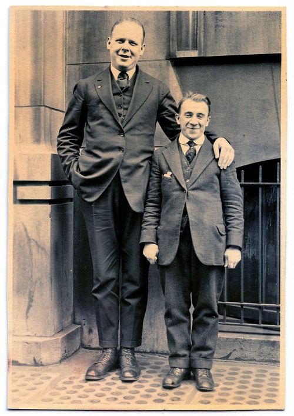
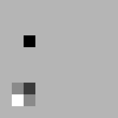

|
Despite of all the recent efforts for standardization, people are still being born with different genomes, resulting in different sizes. The relevance to the world of movies is that tall people should not sit before short people, because they may block the view. Because the necessary technology is still rather expensive, it's not feasible yet to do full genetic screening of every guest when they purchase a ticket. Therefore the seating order must be resolved right before the movie starts. There is a common "best practice" method that provides good results using simple heuristics, while avoiding chaos. People first sit where their ticket says so; then if someone doesn't see the screen, they ask the person sitting in front of them to swap seats. Because most people are polite and will not climb over a row of seats, they usually stand up and move along the rows and aisles. Customers sitting in the same row on adjacent seats may also swap seats, if they think this can help the process along. To avoid confusion and mass panic, every swap is fully finished before a new one can be started. |

source: http://thegraphicsfairy.com/funny-old-photo-tall-man-with-short-man/ |
This moving around of viewers is interesting to you since it takes a lot of time (longer than the actual movie), and you can show commercials during the process. It is essential to be able to estimate the amount of time you have to fill with commercials - which will be proportional to the number of swaps. To get a clearer picture on how the process works, you sample 10 audiences, and attempt to determine how the shuffling will happen.
Data is stored in greyscale PNG files; the darker a pixel is, the shorter is the customer sitting there. You need to find a reasonably short sequence of swaps that would result in clear view for everyone. Your solution will most probably be more efficient (smaller number of swaps) than what the guests would do in reality, so it will provide a good minimum estimation on how much time you can contract for commercials.
SCORE = 100*(1 - sqrt(1 - BEST/SWAPS))
| value | description | relative address |
|---|---|---|
| 0 | stay in place | x:0 y:0 |
| 1 | north | x:0 y:-1 |
| 2 | east | x:+1 y:0 |
| 3 | south | x:0 y:+1 |
| 4 | west | x:-1 y:0 |
For example a swap line "2 6 8 0 3 1 2" would first swap pixel x=6;y=8 with pixel x=6;y=9 then pixel x=7;y=8 with pixel x=8;y=8, leaving the reference coordinate x=7;y=8 at the end of the sequence.
The screen is on the left; a valid output transforms the input image so that pixel values are in ascending order from left to right in each row. There is no requirement for any sort of vertical arrangement.
Addressing out of the image dimensions for either end of a swap is a fatal error (submission not accepted); swapping a pixel with itself is legal and will not change the image. Integers in any field are between 0 and 230. The usual maximum size of submission may limit the number of swaps a valid output file can contain. Number of swaps (L) is greater than zero.
Example input | Example output5 2 2 3 0 4 4 4 2 2 7 0 4 4 4 1 1 7 0 2 2 2 8 0 4 4 4 7 2 8 0 2 2 2 2 2 2 2 2 2 2 2 2 2 |